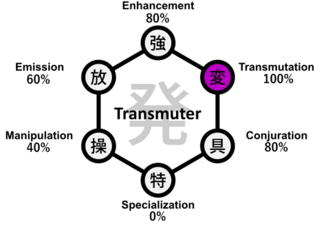

Hunter X Hunter
Transmuter Nen Type
Transmuters alter the properties of their aura to behave like something else — from electricity to rubbery threads — enabling deceptive and versatile techniques.

Key Characteristics of Transmuters
- Changes aura qualities to mimic elements or materials.
- Favors trickery, conditional damage, and utility.
- Requires creativity and fine control for best results.
Video Overview
Enhancers rely on mental discipline to maintain and enhance their physical abilities, making them formidable opponents in direct confrontations.
Understanding Enhancer abilities is essential to grasp the fundamentals of Nen combat in Hunter x Hunter.